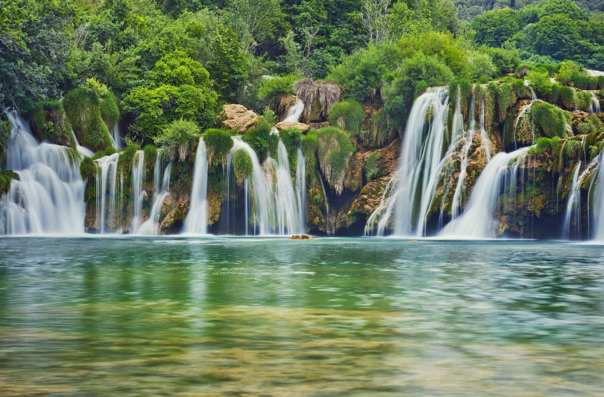

A waterfall is nature's masterpiece in motion, a mesmerizing spectacle of raw power and ethereal beauty. As cascading torrents of water plunge from great heights, they create an awe-inspiring display that captivates the senses and stirs the soul. The thunderous roar of the rushing water, the shimmering mist that dances in the air, and the sheer force with which it carves through the landscape—all combine to create an unforgettable experience. Each waterfall possesses its own unique charm and personality, whether it's the iconic majesty of Niagara Falls or the hidden gems tucked away in remote corners of the world. Standing in the presence of a waterfall is to be humbled by the forces of nature, to marvel at its relentless energy and timeless beauty. It's a reminder of the ever-changing and awe-inspiring wonders that adorn our planet, beckoning adventurers and dreamers alike to witness its grandeur firsthand.